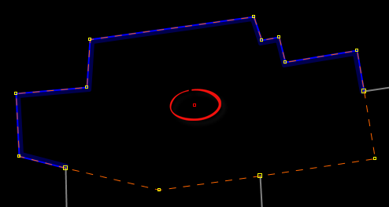

Pembuatan Batas Administrasi dengan JOSM
Download page as PDFTujuan Pembelajaran:
- Mampu memahami pengertian dan contoh relasi data di OpenStreetMap
- Mampu memahami konsep batas administrasi di OpenStreetMap
- Mampu memahami syarat dan ketentuan membuat batas administrasi di OpenStreetMap
- Mampu membuat batas administrasi di OpenStreetMap
Pemetaan batas administrasi di dalam OpenStreetMap merupakan hal yang rumit dan disarankan pengguna yang sudah mahir atau terbiasa menggunakan OSM yang melakukan digitasi dan meng-upload ke dalam OSM. Sumber data yang digunakan dalam penarikan batas administrasi dan penentuan wilayah administrasi harus melibatkan pihak pemerintah yang mengetahui batas tersebut.
Dalam proyek PDC InAWARE, penentuan batas administrasi melibatkan pihak kelurahan dan keputusan wilayah administrasi sepenuhnya berasal dari pihak kelurahan. Jika sumber data tidak jelas dan tidak memiliki lisensi Open Data Commons Open Database License (ODbL), data tersebut tidak diperkenankan untuk di-upload ke dalam OSM. Hal ini dapat menimbulkan permasalahan pada saat pengguna lainnya men-download dan menggunakan data batas administrasi secara bebas untuk kepentingan mereka.
I. Relasi Data di OSM
Relasi merupakan salah satu elemen utama dalam data OSM yang terdiri dari satu atau lebih tag dan juga memuat daftar urutan objek yang tergabung dalam relasi sebagai anggota dari relasi tersebut. Dalam membuat batas administrasi, kita harus menggunakan fitur relasi. Relasi digunakan untuk mengelompokkan batas administrasi dan memberikan tanda batas tersebut sebagai batas luar atau batas dalam. Relasi dalam pembuatan batas administrasi terdiri dari dua jenis yaitu:
a. Relation Tags
Tabel Tags pada Relasi Batas Administrasi
| Key | Value | Keterangan |
| admin_level | (1-11) Disesuaikan dengan level batas administrasi | Tag yang berguna untuk mengidentifikasi tingkat batas administrasi pada suatu daerah, misalnya admin_level = 4 di Indonesia merupakan tingkat batas administrasi untuk batas provinsi. |
| boundary | administrative | Tag ini merupakan tag batas administrasi yang sebenarnya. |
| type | boundary | Tag ini adalah tag utama untuk mengenali bahwa objek tersebut termasuk ke dalam batas administrasi. |
| name | nama administrasi | Tag yang mendeskripsikan nama dari batas administrasi tersebut, misalnya: Provinsi Jawa Barat, Kota Depok, Kecamatan Sawangan, RW 03 ataupun RW 05. |
| place | contoh: suburb, island | Ini merupakan tag optional, tidak wajib dipakai. Tag yang berguna untuk mendeskripsikan jenis area yang ada di dalam batas administrasi tersebut apakah termasuk garis pantai dan penggunaan lahan lainnya.
Info lengkap lihat di: http://wiki.openstreetmap.org/wiki/Key:place |
| land_area | administrative | Tag untuk menyatakan sebagai sebuah batas wilayah daratan |
| is_in:province | nama provinsi | Tag yang mendeskripsikan nama Provinsi. Tag ini ini harus dimasukkan pada batas administrasi yang berada di tingkat bawah dari Provinsi (Kota/Kabupaten/Kotamadya, Kecamatan, Kelurahan/Desa, RW dan RT) |
| (Kota)
is_in:city (Kab/Kotamadya) is_in:town |
nama kabupaten/kotamadya | Tag yang mendeskripsikan nama Kota/Kabupaten/Kotamadya. Tag ini ini harus dimasukkan pada batas administrasi yang berada di tingkat bawah dari Kota/Kabupaten/kotamadya (Kecamatan, Kelurahan/Desa, RW dan RT) |
| is_in:municipality | nama kecamatan | Tag yang mendeskripsikan nama Kecamatan. Tag ini ini harus dimasukkan pada batas administrasi yang berada di tingkat bawah dari Kecamatan (Kelurahan/Desa, RW dan RT) |
| is_in:village | nama kelurahan/desa | Tag yang mendeskripsikan nama Kelurahan/Desa. Tag ini ini harus dimasukkan pada batas administrasi yang berada di tingkat bawah dari Kelurahan/Desa (RW dan RT) |
| is_in:RW | nama RW | Tag yang mendeskripsikan nama RW. Tag ini harus dimasukkan pada batas administrasi yang berada di tingkat bawah dari RW (RT) |
b. Relation Members
Admin_centre
Titik yang mewakili pusat administrasi pada suatu daerah biasanya berupa ibu kota provinsi, kelurahan, dan sebagainya, tergantung dari tingkat batas administrasinya.Outer
Rangkaian dari garis-garis yang terhubung menjadi suatu batas tertutup seperti poligon / batas luar dari suatu wilayah administrasi.Inner
Rangkaian dari garis-garis yang terhubung menjadi suatu batas tertutup seperti poligon dan objek tersebut berada di dalam area yang termasuk inner/ batas dalam dari suatu wilayah administrasi.

wilayah C berada di dalam wilayah A dan wilayah C diidentifikasi sebagai inner dari relation members (https://wiki.openstreetmap.org/wiki/Main_Page)
II. Mengenal Batas Administrasi di OSM
a. Pengertian Batas Administrasi
Batas administrasi merupakan sebuah pembagian daerah / wilayah yang diakui oleh pemerintah atau organisasi lain untuk keperluan administratif. Tingkat batas administrasi mulai dari yang tertinggi hingga terendah di dalam OpenStreetMap ditandai dengan key=admin_level dan value= dari 1 - 11 (tertinggi - terendah).

Batas Rukun Tetangga (RT) dan Rukun Warga (RW) di Petamburan
b. Tingkat Batas Administrasi di Dunia
Tingkatan batas administrasi bisa jadi berbeda-beda antara negara yang satu dengan yang lainnya. Sangat disarankan bila Anda hendak membuat atau mengedit batas administrasi negara tertentu, Anda perlu mengetahui terlebih dahulu value dari key = admin_level yang digunakan. Daftar tingkat administrasi berbagai negara dapat Anda lihat di halaman Wiki OpenStreetMap: http://wiki.openstreetmap.org/wiki/Tag:boundary%3Dadministrative atau https://tinyurl.com/wiki-batasadm
c. Tingkat Batas Administrasi di Indonesia
Pembagian batas administrasi di Indonesia disesuaikan dengan pembagian wilayah daratan dan perairan di Indonesia yang dikelola oleh pemerintah daerah menurut prinsip otonomi, dekonsentrasi, desentralisasi dan tugas pembantuan. Jenis batas administrasi yang ada di Indonesia yaitu provinsi, kota/kabupaten, kecamatan, dan kelurahan/desa.
Apabila jenis batas administrasi di Indonesia dilihat di OpenStreetMap, batas administrasi tersebut memiliki value yang berbeda-beda disesuaikan dengan tingkat administrasi. Berikut adalah tingkat administrasi yang digunakan di OpenStreetMap untuk wilayah Indonesia:
Tabel Tingkat Administrasi di Indonesia
| value | Tingkat Administrasi | Tampilan di Mapnik | Place |
| 1 | - | - | |
| 2 | Batas Negara |

|
|
| 3 | - | - | |
| 4 | Batas Provinsi |

|
Province |
| 5 | Batas Kota / Kotamadya / Kabupaten (Daftar Kota & Kab. Indonesia) | Kota = City
Kab/Kotamadya= Town |
|
| 6 | Batas Kecamatan |

|
Municipality |
| 7 | Batas Kelurahan/Desa |

|
Village |
| 8 | Batas Dusun |

|
Hamlet |
| 9 | Batas Rukun Warga (RW) |

|
Community Group |
| 10 | Batas Rukun Tetangga (RT) |

|
Neighborhood Unit |
III. Syarat dan Ketentuan Menggambar Batas Administrasi di OpenStreetMap
a. Syarat dan Ketentuan untuk Pengguna yang Ingin Menggambar
Batas administrasi merupakan hal yang sangat sensitif untuk dibuat atau diubah. Selain karena masalah kebijakan, data batas administrasi secara topologi juga tersusun dari relasi yang kompleks. Jika salah satu objek berubah, maka akan berdampak pada objek lainnya dalam satu relasi yang sama. Oleh sebab itu, bagi pengguna OSM yang hendak mengubah data tersebut sangat diharapkan memiliki kompetensi sebagai berikut:
- Sudah memahami konsep relasi pada data OpenStreetMap terutama relasi untuk batas administrasi
- Mengetahui batas administrasi yang akan diedit dan sumber/referensi datanya
- Mengetahui tingkat batas administrasi di OpenStreetMap untuk wilayah Indonesia
b. Syarat dan Ketentuan untuk Data yang Dimasukkan
Data yang dimaksud adalah data batas administrasi yang akan dimasukkan ke dalam OpenStreetMap. Beberapa syarat dan ketentuan untuk data yang akan digunakan dan dimasukkan ke dalam OpenStreetMap yaitu:
- Data harus memiliki sumber yang jelas dari mana asalnya misalnya data bersumber dari pemerintah
- Data harus memiliki izin penggunaan (lisensi), apakah data tersebut boleh disebarluaskan ke publik atau tidak karena data ini nantinya akan dilihat dan digunakan oleh publik atau masyarakat luas
- Data harus memiliki pembagian batas-batas administrasi yang jelas dan sesuai dengan yang sudah disahkan
IV. Langkah-Langkah Menggambar Batas Administrasi di OpenStreetMap
Dalam membuat batas administrasi sangat disarankan untuk menggunakan editor Java OpenStreetMap (JOSM) karena alat yang disediakan lebih lengkap dan untuk melakukan editing dan modifikasi jauh lebih mudah dibandingkan editor lainnya seperti iD Editor.
Catatan : Data yang dipakai pada tutorial ini hanyalah data contoh atau data fiktif untuk mempermudah pemahaman kita dalam mempraktekan pembuatan batas administrasi.
Berikut langkah-langkah yang dilakukan untuk membuat batas administrasi di OpenStreetMap yaitu :
a. Menggambar Garis Batas Administrasi
- Hal pertama yang dilakukan adalah membuka editor JOSM di komputer Anda.
- Kemudian pilih wilayah yang akan dibuat batas administrasinya dengan men-download data OSM di wilayah tersebut.
- Jika data OSM sudah lengkap seperti bangunan dan jalan, Anda dapat menggunakan fungsi filter pada JOSM yang terdapat pada modul Menggunakan alat Filter di JOSM untuk mengatur tampilan bangunan dan jalan agar memudahkan dalam digitasi batas administrasi.
- Mulailah dengan mendigitasi batas administrasi yang sudah sesuai dengan syarat dan ketentuan data yang akan dimasukkan pada penjelasan sebelumnya. Untuk mendigitasi gunakanlah tool Draw Node.

- Gambar di bawah ini adalah salah satu contoh mendigitasi batas administrasi.
Pembagian contoh wilayah
- Dalam menggambar batas administrasi, harap memperhatikan hal-hal berikut:
- Gambarlah sebagai garis yang saling tersambung satu sama lain antar batas administrasi
- Tidak ada garis batas administrasi yang saling bertampalan atau tergambar dua kali
- Pastikan setiap pertemuan garis merupakan garis yang terpisah (dalam artian berbeda segmen). Jika garis tersebut masih terlihat seperti pada gambar di bawah ini :
Kesalahan pada relasi batas admin
- Anda harus membagi garis tersebut menggunakan Tools → Split Way atau menggunakan shortcut tombol P pada keyboard Anda dengan cara memilih 2 (dua) node dari garis yang akan Anda bagi hingga hasilnya menjadi seperti ini:
Split way pada garis administrasi
b. Memberikan Tag pada Garis Batas Administrasi
- Langkah selanjutnya kita akan memberikan tag pada tiap garis batas yang kita buat. Pilih salah satu segmen garis dari batas administrasi.
Pemilihan garis pada batas administrasi
- Kemudian berikan tag pada garis yang terpilih tersebut dengan cara klik Menu Presets → Batas Administrasi → Garis Batas Administrasi. Jika presets ini tidak ada di daftar Anda, silahkan buka modul Pengoperasian JOSM untuk menambahkan “PDC InAWARE Indonesia preset”.

Presets Batas Administrasi
- Akan muncul jendela yang dapat Anda isi sesuai dengan nama desa yang berbatasan, misalnya Desa A / Desa B. Tag ini bertujuan untuk memberikan keterangan bahwa segmen garis tersebut merupakan batas administrasi untuk Desa A dan Desa B. Kemudian klik Apply preset untuk menyimpan hasil.

Tag Batas Administrasi
- Anda dapat melihat tags pada garis tersebut, dengan memilih garis menggunakan select tool dan arahkan pada panel Tags di sebelah kanan, akan terlihat seperti gambar di bawah ini:
Tags pada garis admin
- Mari kita lanjutkan memberi tag pada segmen-segmen garis pembentuk batas administrasi Desa A. Sekarang pilih segmen garis batas antara Desa A dan Desa C. Berikan tag dengan langkah yang sama seperti sebelumnya.
Pemberian tag antar batas desa A dan C
- Tutorial kali ini akan memberikan contoh membuat batas administrasi desa dan kelurahan yang mana kelurahan tersebut wilayahnya mencakup satu daratan/pulau. Pada gambar dibawah ini, garis yang berwarna merah merupakan garis batas antara Desa A dengan wilayah laut.
Batas administrasi yang berbatasan dengan laut
- Pada kasus ini, tag yang harus diberikan sedikit berbeda, yaitu harus ditambahkan key=natural dan value=coastline, kemudian untuk key=note dapat dihilangkan. Untuk menambahkan tag tersebut, klik Menu Presets → Perairan → Natural → Garis Pantai.


Pemberian tag pada garis pantai
- Setelah segmen-segmen dari garis batas Desa A diberi tag, gambarlah sebuah titik sebagai titik pusat dari Desa A.

Digitasi titik sebagai nama desa
- Kemudian beri tag pada titik tersebut dengan pergi ke Presets → Batas Administrasi → Titik Pusat Administrasi. Isi kolom Nama dengan nama desa dan pilih tingkat administrasi sesuai dengan kategori batas administrasi.

Pemberian tag nama desa
- Setelah titik tersebut diberi tag maka hasilnya akan seperti ini:

Hasil titik nama desa
c. Membuat Relasi Batas Administrasi (contoh: Desa)
- Langkah selanjutnya kita akan memulai membuat sebuah relasi untuk membuat batas administrasi Desa A. Pilih semua segmen/garis batas administrasi dan titik nama desa dengan Select Tool.
Pilih semua garis dan titik nama desa
- Kemudian pilih Presets → Batas Administrasi → Wilayah Administrasi.

Presets untuk relasi wilayah administrasi
- Kemudian akan muncul jendela mengenai isian daftar wilayah administrasi. Isikan daftar tersebut sesuai dengan wilayah administrasi yang Anda dapatkan dari instansi pemerintah. Jika Anda menemukan tanda v pada baris isian, silahkan di klik dan dipilih yang sesuai. Klik New relation untuk membuat relasi baru.

Daftar isian wilayah administrasi
- Selanjutnya akan terbuka jendela relasi seperti dibawah ini:
Jendela relasi wilayah administrasi
- Selanjutnya, perhatikan pada bagian Role. Setelah anggota relasi Desa A lengkap, saatnya kita menentukan peran dari setiap anggota relasi. Segmen garis pembentuk batas Desa A kita beri peran sebagai “outer” atau sebagai batas luar dari wilayah administrasi. Sedangkan Titik pusat Desa A kita beri peran sebagai “admin_centre”.

Peran di setiap wilayah administrasi
- Pastikan daftar segmen pembentuk batas administrasi sudah urut. Jika daftar segmen belum urut, maka garis di sebelah kanan daftar tidak akan menutup seperti ini:

- Untuk membuat daftar segmen sesuai urutan, klik tombol Sortir Relasi Member (Sort the relation members)

- Jika daftar segmen sudah urut, maka garis di sebelah kanan daftar akan menutup seperti ini:

- Setelah memberikan peran pada tiap anggota relasi dan memastikan daftar segmen pembentuk batas administrasi sudah urut, klik tombol OK.
- Sekarang klik dua kali di dalam area administratif Desa A. Jika relasi sudah terbentuk, maka wilayah Desa A akan berwarna ungu seperti ini:
Wilayah desa A
- Selanjutnya, silahkan Anda lakukan hal yang sama seperti diatas untuk membuat batas administrasi Desa B. Jika sudah berhasil maka hasilnya akan seperti ini:

Wilayah desa B
- Sebelum kita lanjut untuk membuat batas Desa C, kita akan mencoba untuk mendigitasi batas desa baru yang ada di dalam wilayah Desa C. Mari kita sebut desa baru ini sebagai Desa D.
Tambahan admin baru yang berada di dalam Desa C
- Setelah anggota relasi Desa C lengkap, saatnya kita menentukan peran dari setiap anggota relasi.
- Segmen garis pembentuk batas luar Desa C (garis batas antara Desa C/A, garis batas antara Desa C/B, dan garis batas antara Desa C/Laut) → berperan sebagai “outer” atau sebagai batas luar dari wilayah administrasi seperti pada gambar di atas.
- Segmen garis batas dalam Desa C (garis batas antara Desa C/D) → berperan sebagai “inner” atau sebagai batas dalam dari wilayah administrasi seperti pada gambar di atas.
- Titik pusat Desa C → berperan sebagai “admin_centre”

Pengaturan relasi Desa C
- Klik tombol Sortir Relasi Member (Sort the relation members) untuk memastikan daftar anggota relasi sudah urut.
- Sekarang klik dua kali di dalam area administratif Desa C. Jika relasi sudah terbentuk, maka wilayah Desa C akan berwarna ungu seperti ini:
Hasil relasi Desa C
- Setelah membuat batas administrasi Desa C, mari kita lanjutkan untuk membuat batas Desa D. Silahkan Anda lakukan hal yang sama untuk membuat wilayah administrasi Desa D. Jika sudah berhasil maka hasilnya akan seperti ini:

Hasil relasi Desa D
c. Membuat Relasi Batas Administrasi (contoh: Kecamatan)
- Pada langkah-langkah sebelumnya kita sudah membuat batas administrasi dalam tingkat desa, sekarang kita akan membuat batas administrasi satu tingkat di atas desa, yaitu kecamatan. Langkah yang akan kita lakukan kurang lebih sama dengan langkah-langkah sebelumnya.
- Mari kita buat titik pusat Kecamatan Kertamukti, kemudian berikan tag: Klik Menu Preset → Batas Administrasi → Titik Batas Administrasi

Pemberian presets pada titik nama kecamatan
- Pilih semua segmen batas administrasi dan titik administrasi kecamatan untuk memulai membuat relasi.

Pilih semua batas terluar dan titik kecamatan
- kemudian pilih Menu Presets → Batas Administrasi → Wilayah Administrasi. Silahkan Anda isi secara lengkap nama kecamatan, tingkat administrasi kecamatan, dan kosongkan isian Kecamatan.

Daftar isian presets wilayah admin kecamatan
- Setelah anggota relasi Kecamatan Kertamukti lengkap, saatnya kita menentukan peran dari setiap anggota relasi. Segmen garis pembentuk batas Kecamatan Kertamukti kita beri peran sebagai “outer” atau sebagai batas luar dari wilayah administrasi, sedangkan Titik pusat Kecamatan Kertamukti kita beri peran sebagai “admin_centre”
Pengaturan relasi kecamatan
- Pastikan daftar segmen pembentuk batas administrasi sudah urut. Jika daftar segmen belum urut, maka garis di sebelah kanan daftar tidak akan menutup seperti ini:
- Untuk membuat daftar segmen sesuai urutan, klik tombol Sortir Relasi Member (Sort the relation members)
- Jika daftar segmen sudah urut, maka garis di sebelah kanan daftar akan menutup seperti ini:
- Setelah memberikan peran pada tiap anggota relasi dan memastikan daftar segmen pembentuk batas administrasi sudah urut, klik tombol OK.
- Jika Anda ingin melanjutkan batas administrasi sampai tingkat ke level yang lebih tinggi, maka langkah yang digunakan akan sama, yang membedakan pada saat memberikan tags wilayah administrasi dan titik administrasi.
- Cek hasil batas administrasi yang sudah Anda buat di www.openstreetmap.org

Contoh batas administrasi di dalam OSM
RINGKASAN
Anda telah mempelajari langkah-langkah dalam membuat batas administrasi dengan mendigitasi di JOSM, dengan menggunakan relasi di dalam OSM. Sebuah relasi terbangun dari garis-garis yang disatukan menjadi sebuah kesatuan membentuk poligon, sehingga data batas admin yang dihasilkan akan membentuk sebuah poligon pada saat di-download menggunakan Export Tool.